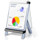
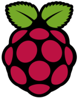
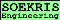
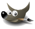

Divers
From Deimos.fr / Bloc Notes Informatique
Jump to:
navigation
,
search
Contents
1
Android
2
Divers
3
Firefox
4
Fonera
5
Free
6
Google
7
LaTeX
8
Management
9
Raspberry Pi
10
Soekris
11
The Gimp
12
Thunderbird
1
Android
Modifications du Samsung Galaxy S2
2
Divers
Réparer une video d'une GoPro Hero
myTinyTodo : Un outil simple de gestion de tâches
PS3 : Comment mettre du multimedia sur disque dur externe ou clef USB
Ne pas se faire référencer son site web (scans robots désactivé)
ADSL : Optimisation de sa ligne
Forum : Invision Powerboard : astuces
Signification des bips émis par le Bios
Quels sont les formats à utiliser sur le web pour les images ?
Picasa : Télécharger des photos sans utiliser Picasa
3
Firefox
Firefox : ouvrir plusieurs onglets en page de démarrage
Firefox : avoir ses "Unsorted Bookmark" dans sa barre de bookmark active
4
Fonera
Activer le SSH sur sa Fonera+
Modifier le firmware par le FrancoFON
Modifier le firmware par le OpenWrt
5
Free
Freebox 6 : piloter à distance via API sa Freebox
Rebooter sa Freebox Server 6 en ligne de commande
Freebox TV
Mise en place de FreePlayer en mode démon sous Linux
Envoie de fichiers temporaires à débit rapide
6
Google
Gmail : Avoir plusieurs adresses mails avec un seul compte gmail
Outrepasser les installation d'extentions Google pour Firefox afin de les installer sur linux
Google Map : Utiliser l'API pour faire ce que vous souhaitez
Google Astuces de recherche
7
LaTeX
Beamer : create beautiful LaTeX presentations
Template pour créer des Cheat Sheet en LaTeX

8
Management
Introduction au Management
Présentation du Scrum pour une équipe Sysnet

9
Raspberry Pi
OpenElec : Solution multimedia pour Raspberry Pi

10
Soekris
Configuration et installation via port série d'OpenBSD sur Soekris
Upgrader le BIOS de la Soekris

11
The Gimp
Creer de faux reflets
Repassez au vynile
Une photo de rêve
Utilisez le filtre Puzzle
Faites brûler le texte
Créez vos propres pinceaux
Un fond océanique
Texture de pierre et runes
Créez une texture extraterrestre
Carrelage et mosaique
Découpez le Web
Flower power
Un titre simple reflèté
Un texte d’architecte
Un titre tres technologique
12
Thunderbird
Une belle signature pour Thunderbird
Category
:
Divers
Navigation menu
Personal tools
Log in
Namespaces
Page
Variants
Views
Read
View source
View history
More
Search
navigation et RSS
cd ~
Menu
Solaris
BSD
Linux
Mac OS X
Windows
Servers
Development
Ethical Hacking
Network
Divers
Liens
Welcome Page
Blog
Resume
GitHub
Google Search
Translate
Tools
What links here
Related changes
Special pages
Printable version
Permanent link
Page information
{kind=link}
{kind=link}
{kind=link}
{kind=link}
{kind=link}
{kind=link}
{kind=link}
{kind=link}
{kind=link}
{kind=link}
{kind=link}